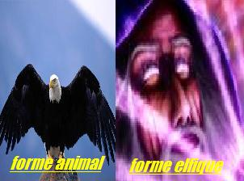

Forums galactiques > Assemblée Galactique : diplomatie officielle > Message important
Pages : 1
| aigle noir Respect diplomatique : 14  06/01 ETU 21:01 | Score : 2 Détails Message important !!!
Un virus c'est échappé d'un des labos de notre planète. Il s'appelle Invasionusia ,n'importe qui sera contaminé voudra un maximum de pouvoir ! Le max de pouvoir étant dans le 0 ,des attaques pourrait être arriver avant ou après le départ de ce message. Pour ceux qui ne serait pas contaminer n'approcher pas les malades ,vous pourriez attraper cette maladie. Cette maladie n'est pas une blague ,c'est très sérieux et ne prenez pas sa comme une farce . Message envoyé du Labos 425 du peuple des aigles . | ||
| Destructeur Respect diplomatique : 20  06/01 ETU 21:15 | Score : 0 Détails Message de sous-importance
Ne vous inquiétez pas pour mon peuple, ils résistent bien à l'Uranuts donc votre virus risque d'avoir aucun effet sur mon peuple, mais par contre, moi je suis assez intelligent pour pas en mangez... Je fournis de l'Uranuts, un anti-virus puissant pour échapper à ce virus prenez en pour seulement 5£ l'unité. | ||
| Requiem Respect diplomatique : 1538  06/01 ETU 21:21  | Score : 1 Détails Pour ma part, les vampires sont invulnérable à toutes les maladies, car nos corps s'auto-régénèrent!
Nous pouvons donc être spectateur et rire... ou pleurer, en regardant cette mascarade... | ||
| Hachi Respect diplomatique : 114  06/01 ETU 21:24 | Score : 3 Détails Un message d’alerte apparut sur les écrans de l’assemblée. Hachi, la voix grave et l’air anxieux dit:
« Le message précédent doit être une invitation pour hyperatomiser le système 425... Commandants, commandantes, mes chercheurs vont équiper certaines de nos bombes hyperatomiques d’anti-virus. Cela devrait suffir à éliminer la menace et toute forme de vie présente dans le système. En raison des nombreux anti-virus, les communications risquent d’être interrompues, ou ralenties…" Le système sera « nettoyé » dans 23h et 45mn. Nous déclinons toute responsabilité... Hachi prit soudain un verre de soda, sourit et dit à l’ensemble des commandant: "Nous sommes toujours à l’assemblée générale et les rumeurs ne cesse d’affluer… on parle même d’une attaque contre le zéro… » Enfin... trois messages précédent... | ||
| Acanith Respect diplomatique : 1200  07/01 ETU 12:52 | Score : 5 Détails Commandants
Le Département de Sciences du Vivant vous fait savoir que ses métazoaires alpha peuvent pallier à la plupart des épidémies, et le virus mentionné par le Commandant Aigle Noir ne fait pas exception à la règle. Nous pouvons combattre sans problème cette maladie. Toutefois, nos chercheurs n'ont pu mettre au point le vaccin anti Vannes-Pourries (comme en témoigne d'ailleurs le contenu de ce message), m'obligeant ainsi à fonder le CPVP, que le Commandant Aigle Noir est cordialement invité à rejoindre. Il va de soi que, dans l'éventualité où un traitement serait mis au point, il serait l'un des premiers à en bénéficier. Commandants, mes respects Acanith, ici en sa qualité de Maître des Gènes de l'Académie de Proculis. |
Pages : 1
Forums galactiques > Assemblée Galactique : diplomatie officielle > Message important